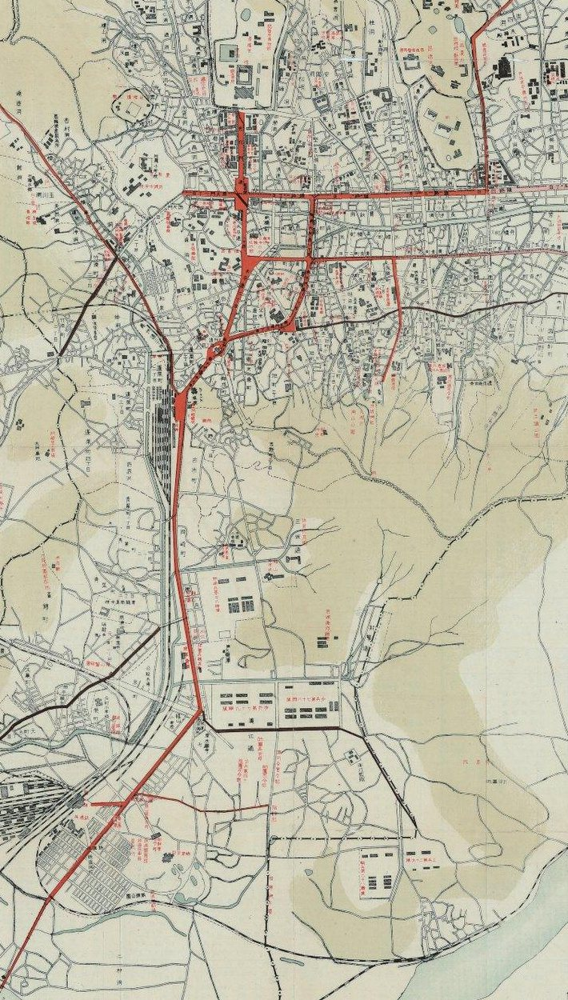
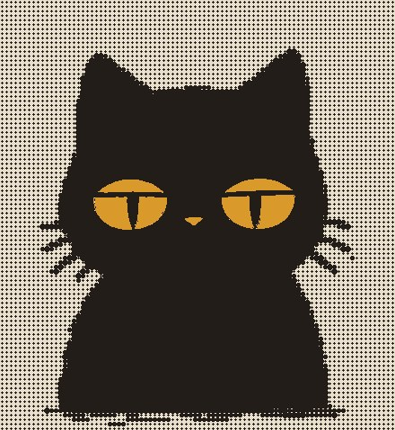
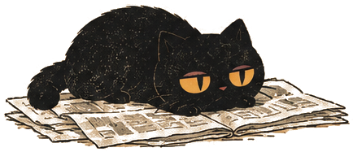

編 경성부관내도 1927 · 서울역사아카이브
경성야록 편집국 식자실에서 활자 한 개가 없어졌다. 없어진 것은 「ㄱ」. 가져간 것은 편집국을 제 집처럼 드나들던 까만 고양이로, 몸은 통통하고 눈은 꿀빛이며 언제나 표정이 없다. 기자들은 그를 그냥 「어이, 그 까만 것」이라 불렀다. 활자가 없으니 오늘 이 호외의 그 자리는 모두 비었다. 고양이를 보신 분은 본사로 엽서를 보내 주시라.
